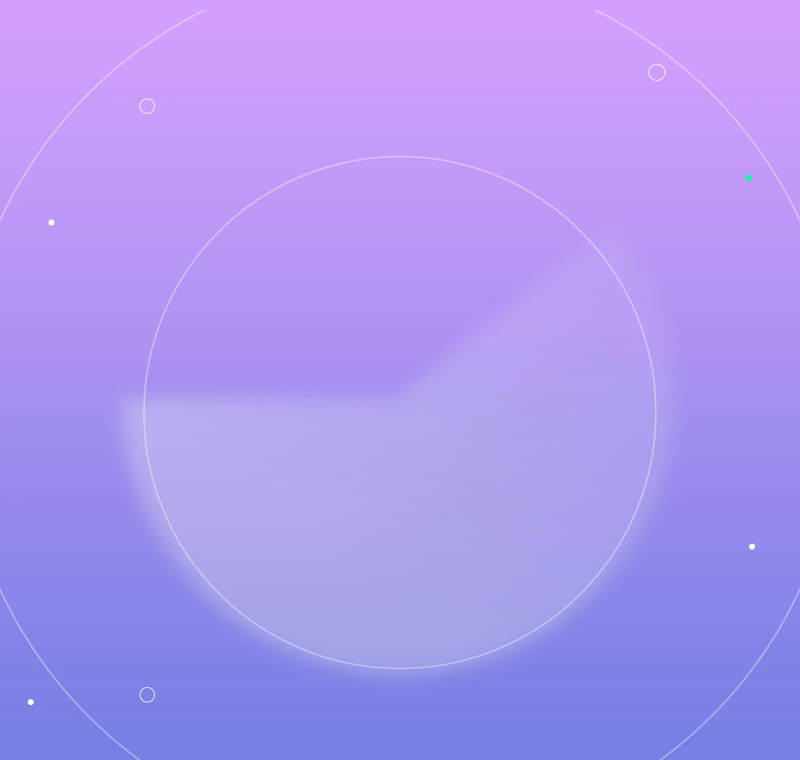
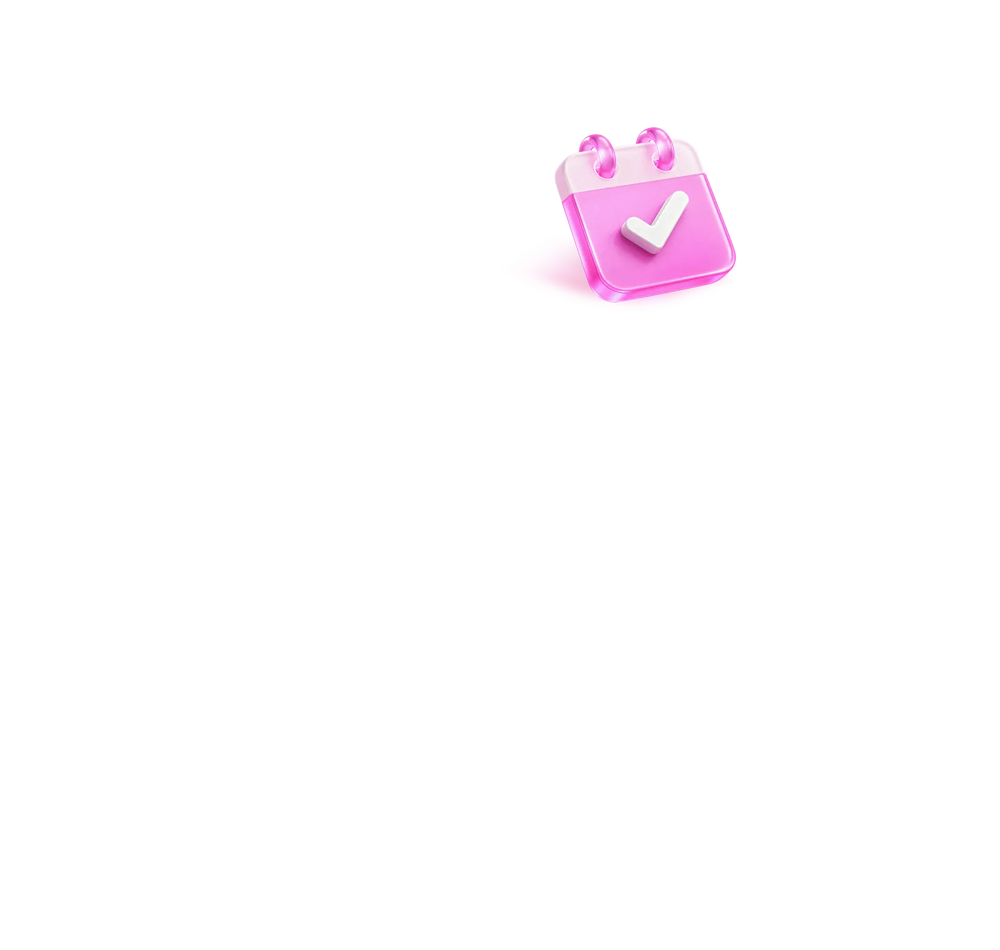

8월 3주 알아두면 도움되는
꿀정보만 모았습니다
전남광주통합특별시의 기간 한정, 품절 임박 정보 놓치면 후회해요.

전기자동차 오너?
지금이 굿 타이밍입니다
전남광주통합특별시가 ‘제3자 전기자동차 민간보급 사업’을 마련, 광주지역 5개 자치구 주민을 대상으로 참가자를 모집합니다.
※ 전남지역 시군은 자체적으로 보급사업 추진 중
- 보급 물량
- 총 413대
- 신청 자격
- 구매 지원 신청일 기준 30일 이상
동‧서‧남‧북‧광산구에 주소를 둔
18세 이상 시민 및 사업장을 둔 기업‧단체 등 - 신청 기간
-
- 전기승용차 : 8. 20.(목) 10시~
- 전기화물‧승합차 : 8. 24.(월) 10시~
- 지원 금액
-
- 전기승용차(중‧대형) 최대 754만 원
- 전기화물차(소형) 최대 1,365만 원
- 전기승합차(대형) 최대 9,100만 원
- 추가 지원
-
- 차상위 이하 계층‧소상공인은 국비 지원액의 20~30%
- 농업인은 국비 지원액의 10%
- 생애최초 구매 청년(19세 이상~34세 이하)은 국비 지원액의 20%
- 택배용 차량은 국비 지원액의 10%
- 전기택시는 250만 원
- 다자녀가구 자녀 수에 따라 최대 300만 원

김치 담그기와
물놀이를 하는 피크닉?
광주김치타운이 ‘김치타운과 함께하는 김치‧물놀이 피크닉’을 열어요! 행사 기간 동안 광주김치타운 광장에 야외 수영장과 물미끄럼틀이 설치되며, 직접 김치를 담가보는 체험 프로그램도 함께 진행할 예정인데요. 사전 신청자에 한해 참가 가능하니 지금 바로 신청하고 무더위도 날리고 맛있는 광주 김치도 맛보세요.
- 기간
- 2026. 8. 21.(금) ~ 8. 23.(일)
- 장소
- 광주김치타운 광장(남구 김치로 60)
- 신청 방법
- ‘빛고을사랑나눔김장대전’
누리집에서 사전 신청

주민세 납부 기한이
다가오고 있습니다
현재 전남광주통합특별시에 주소를 둔 세대주라면 8월 31일까지 잊지 말고 주민세를 납부하세요.
※ 납부기한이 지나면 가산세가 부과되니 늦지 않게 납부해 주세요.
- 납부 기한
- 2026. 8. 16.(일) ~ 8. 31.(월)
- 납부 방법
-
- 전국 모든 금융기관 직접 납부 가능
- 납세고지서가 없어도 ATM‧CD기에서 납부 가능
- 가상계좌‧지방세입계좌 이용 시 은행 영업시간 외에도 계좌이체 가능
- 쉬운 방법
- 스마트폰 앱 ‘스마트위택스’를 통해
납부하면 끝!

사진 좀 찍는 시민이라면
이건 못 참지
나만 보기 아까운 전남광주통합특별시를 사진으로 멋지게 담아주세요! ‘2026 전남광주통합특별시 관광사진 공모전’이 열립니다.
- 접수 기간
- 2026. 8. 3.(월) ~ 8. 31.(월)
- 응모 주제
- 자연경관, 관광명소, 문화유산, 축제, 행사 등
광주특별시의 매력을 담은 사진이라면 OK!

광주문학관에서
인문학 감성을 키워볼까?
광주문학관에서 ‘2026 하반기 정기 프로그램’을 마련했어요. 독서와 창작‧발표 활동을 연계한 참여형 프로그램으로, 지역 문인과 전문강사가 함께하는 수준 높은 문학 교육 프로그램을 운영할 계획인데요. 참가신청은 선착순으로 진행되니 놓치지 않게 서두르세요!
- 프로그램
-
- 독서와 창작‧발표 활동 연계 참여형 프로그램
- 지역 문인‧전문강사와 함께하는
수준 높은 문학 교육
- 신청 방법
- 전남광주통합특별시 누리집 ‘바로예약’에서
선착순 진행

광주를 안전하게 지킬
112명의 어벤져스를 찾아요
전남광주통합특별시 광주자치경찰위원회가 ‘제11기 청년 서포터즈 112’에서 활동할 청년 활동가를 모집합니다. ‘청년 서포터즈 112’는 2021년 전국 최초로 도입한 청년 참여 프로그램이에요. 활동 내역에 따라 기프티콘 제공, 수료증 발급, 자치경찰위원장 감사장 수여 등 혜택도 있으니 많은 도전 바랍니다.
- 모집 인원
- 112명
- 모집 기간
- 2026. 8. 10.(월) ~ 8. 23.(일)
- 모집 대상(요건 모두 충족)
-
- 전남광주통합특별시 소재 대학 재학생
- 만 19세 이상 39세 이하
- 개인 SNS 계정을 보유한 자
- 주요 활동
- SNS를 활용한 자치경찰 홍보 및
시민과의 소통창구 역할

해외시장을 개척하고 싶다면?
수출상담회 신청하세요
‘2026 하반기 바이어 초청 수출상담회’에 참가할 기업 80개사를 모집합니다. 이번 행사는 전남광주통합특별시 출범 이후 처음 추진하는 공동 농수산 행사로, 기존 참여 대상이 광주지역 기업까지 확대되었어요. 해외 판로를 찾고 있다면 이번 기회를 놓치지 마세요.
- 모집 대상
- 전남광주통합특별시
농수산식품 생산‧가공 및 수출기업 - 모집 기간
- 2026. 8. 31.(월)까지
- 지원 내용
-
- 해외 바이어 매칭
- 1:1 비즈니스 상담
- 해외시장 진출 단계별 지원

독창적 유기농업 기술을 보유한
유기농 명인을 찾습니다
유기농업에 기여한 농업인을 발굴해 ‘2026년 전남광주통합특별시 유기농 명인’으로 지정하기 위한 후보자를 추천받습니다. 전남광주통합특별시의 비옥한 땅에서 유기농 외길을 걸어온 숨은 농업인을 알고 있거나, 자진추천하고 싶은 농업인이 있다면 도전하세요!
- 모집 기간
- 2026. 9. 2.(수)까지

최고의 귄-텐츠 선정,
여러분의 한 표가 필요해요
전남광주통합특별시의 다양한 매력을 AI로 담아 뽐내는 ‘AI 귄-텐츠 오디션’의 최종 후보가 결정되었습니다. 한 컷, 한 편, 한 줄, 금손의 손글씨&손그림까지 마음에 드는 귄-텐츠에 투표해 주세요.
- 투표 기간
- 2026. 8. 14.(금) ~ 8. 24.(월)
- 참여 방법
-
- 모두의전남광주 누리집 → 시민광장 접속
- ‘AI 귄-텐츠 오디션 투표하기’ 클릭 후
작품 감상‧투표 - 투표 화면 캡처해 네이버 폼으로 응모